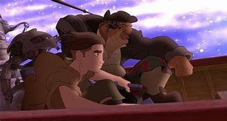
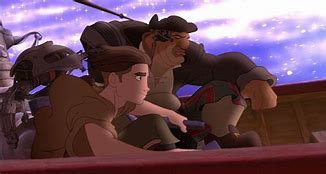
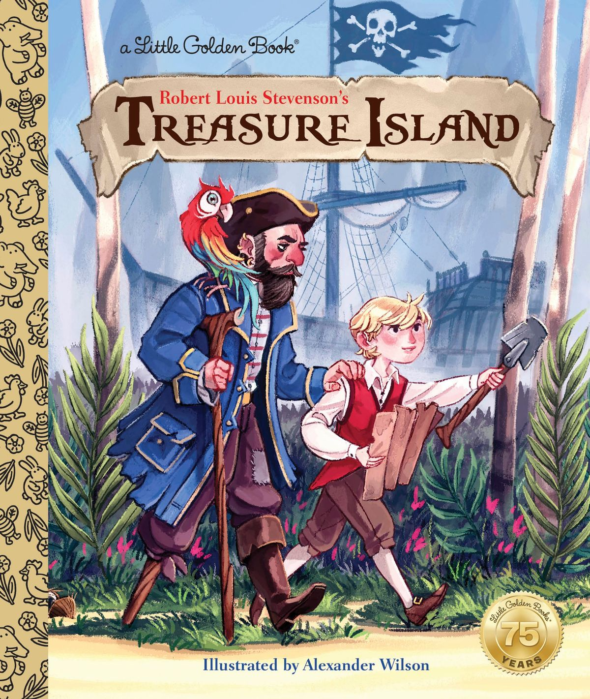
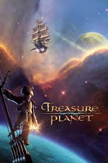
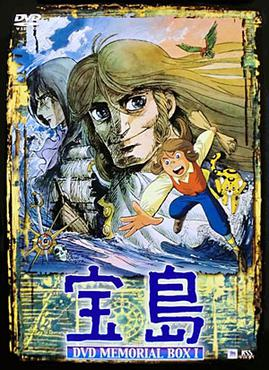
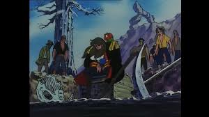

Construção de mundo e contexto na hora de adaptar um clássico
Construção de mundo é um dos aspectos mais importantes de qualquer história. Devido a que o ambiente no qual uma obra se desenrola pode ter um impacto imenso não só na progressão da narrativa, mas também em todos os demais elementos de um trabalho. Em particular os personagens podem ser afetados por seus universos, de forma interna e externa, pois os aspectos políticos, históricos e literários de um mundo podem influenciar drasticamente seus papeis no enredo, e também a maneira como nós os vemos. E duas obras que exemplificam bem essa questão são o anime Takarajima, e o longa-metragem Planeta do tesouro.Como essas histórias são adaptações do mesmo livro; a ilha do tesouro escrito em 1882 por Robert Louis Stevenson, e uma delas se passa na Europa do século XIX e a outra é uma Space opera, as diferenças parecem evidentes. Contudo a alteração dos cenários não afeta a narrativa de forma tão significativa. No fim do dia, ambas as obras são sobre explorar ilhas desconhecidas e enfrentar piratas para conseguir um tesouro, além de que muito da estética do original se mantém na adaptação da Disney, só que agora as armas disparam lasers e os navios tem propulsores a jato. Entretanto, a mudança de ambiente causou enormes alterações nos dois personagens mais importantes da obra, o protagonista Jim hawkins e o antagonista Long John Silver.
Long John Silver: O pirata romântico e o ciborgue
 

Dentre todas as diferenças visuais entre as duas versões, o design de Silver é uma das mais gritantes e fascinantes. Em Takarajima, o pirata é um homem forte, com longos cabelos loiros e olhos azuis, e uma voz bem mais firme e galante que a dos demais piratas, o que é bem fiel à sua contraparte literária. A razão por trás dessas características, é que Silver foi criado para ser um contraponto ao estereótipo do pirata maligno e mau educado, de aparência vil, para ser próximo do homem ideal de sua época. Este é o motivo pelo qual o antagonista apesar de perneta, possui várias cenas de luta, para que assim o anime demonstre que mesmo com sua deficiência física, Silver sempre está acima de qualquer problema, o que aproxima ainda mais sua imagem, a dos grandes heróis da literatura romântica europeia.
Em contraste, o Silver da Disney não possui várias das características de suas contrapartes, devido a que a mudança do cenário tornaria ilógico a imagem do herói romântico ser um homem europeu, visto que não há como prever como séculos de exploração espacial e contato com inúmeras raças de aliens afetaria a percepção humana. Isso causou diversas alterações em tudo que envolve o personagem, desde sua aparência, que agora é de um homem gordo, careca e de pele escura, com próteses robóticas que apenas servem para distingui-lo visualmente por ser o único personagem com detalhes 2d e 3d no design. Mas mesmo essas mudanças tão radicais não se comparam a maior alteração de todas: Sua relação com Jim Hawkins.
Jim Hawkins: Uma juventude sem pai
 Nas duas versões, Jim é um jovem que perdeu o pai, e que passa a ver Silver como uma figura paterna. Porém apesar de similares, as relações entre esses personagens se tornam drasticamente diferentes devido ao caráter de seus universos. No anime, a relação entre Jim e Silver é majoritariamente uma de respeito e admiração, devido a Silver ser o homem que Jim aspirava a ser, devido à época e também pelo respeito que nutria por seu pai, que era um marinheiro. Já no filme, Silver não é uma figura nobre, por isso seu vínculo com o protagonista é muito mais paterno do que o de sua contraparte. Essa diferença também gerou mudanças na relação de Jim com seu pai, que diferente do anime, não é um pai heroico ou uma figura presente, mas sim um homem que nunca deu a atenção que o filho almejava, e que abandonou sua família sem ao menos se despedir.Os diferentes retratos de seu pai tornam Jim um personagem muito diferente em cada uma das versões. No filme, isso faz com que ele seja um jovem rebelde, indisciplinado e sem perspectiva do futuro. Enquanto que no anime, o protagonista aspira a ser como o pai, um nobre marinheiro que vive várias aventuras pelos mares. E essa diferença impacta na formação dos laços de cada um com seu próprio Silver: Em Takarajima, Silver salva o protagonista várias vezes e enfrenta diversos perigos que demostram sua força, enquanto no filme o antagonista apenas protege e instrui Jim em suas tarefas domésticas. E são essas pequenas demonstrações de afeto que criam o laço entre os dois.
Estruturas narrativas distintas
Duas cenas presentes em ambas versões que demonstram bem o meu ponto: o primeiro encontro de Jim e Silver como inimigos, e o ataque solo de Jim ao navio Hispaniola. No anime o protagonista confronta Long John com uma pistola, e demanda sua rendição. E mesmo perante a esse cenário, o pirata provoca o jovem armado e lhe dá as costas, pois sabia que o garoto não tinha sangue frio para atirar em alguém.
E quando os dois personagens principais se encontram no navio em meio a uma tempestade, Silver não tenta persuadir Jim, ou usar de nenhum jogo mental ou ameaça. Ele apenas da as instruções corretas para que ambos saíssem vivos daquela situação e nada mais. Já na versão da Disney, Silver não estava presente no retorno ao Hispaniola. O que Jim encontra lá é outro pirata, que o filme já havia caracterizado como puramente vil e maligno, para assim mostrar que o ciborgue ainda possuía alguma humanidade em comparação,Enquanto que no primeiro reencontro, é Silver que aponta uma arma para Jim. Porém desiste de puxar o gatilho no último minuto devido a seus sentimentos pelo garoto. São cenas como essas que exemplificam bem a diferença entre as duas versões do personagem, e também me fazem preferir o anime. Por que eu creio que apenas essa versão pegou o que fazia John Silver um ótimo personagem: o fato dele ser o homem ideal e também o maior dos vilões ao mesmo tempo.
Não existe nenhum arco de personagem que faça o personagem deixar de aplicar tortura psicológica em uma criança de 13 anos, para depois se tornar um homem admirável. Pois John Silver sempre foi um homem admirável, ele é a representação máxima dos ideais estoicos que formavam os heróis, e da crueldade extrema que caracterizava os vilões, essas características faziam dele um grande líder, um terrível inimigo e acima de tudo, um homem que impõe respeito e medo no coração de todos. São essas diferenças que contribuem para que os finais de cada versão sejam tão diferentes em termos de execução e temática, apesar de serem muito similares em conceito. Por que enquanto o Jim de Planeta do Tesouro aceita a partida do Silver, e isso serve de catarse para seus problemas com abandono, sua contraparte passa por uma resolução bem diferente.
Devido a que mesmo depois de adulto, Jim ainda admirava o velho pirata apesar de haver presenciado o quão horrível sua índole podia ser. Mas ao crescer e se tornar um marinheiro como seu pai, manter o contato com seus companheiros ventura, e estar prestes a constituir família com a mulher que ama – ao ver que Silver em contraste se tornou um velho que passa suas noites vadiando em bares, e cuja única companhia é seu papagaio de estimação – Jim finalmente compreende a situação. Silver por mais que ainda fosse um homem forte e orgulhoso, estava em uma situação lamentável devido a sua ambição, algo que o próprio personagem parecia reconhecer ao impedir o protagonista de se aproximar. E com esse final, Jim aprende que mesmo o admirando, Silver não é o ideal que ele almeja, e assim segue para formar uma vida guiada pelas memórias de seu pai, e com isso alcança uma conclusão tematicamente oposta à sua contraparte.
Pontos de convergência
Diferenças de abordagem aos personagens são cada vez mais notórias durante as obras, em especial em seus finais. No livro Silver apenas foge com parte do tesouro a noite, e Jim nunca tem a chance de se despedir ou ver o pirata pela última vez. Enquanto que nas duas adaptações, esses dois tem a chance de se despedirem propriamente.
Em Planeta do Tesouro, Jim permite a fuga do ciborgue, e o pirata retribui o ato de generosidade ao entregar o pouco que conseguiu roubar do tesouro para que o protagonista possa ter uma vida melhor. Enquanto que em Takarajima, Silver foge com o tesouro assim como no livro, mas ele e Jim se reencontram. Porém ao contrário da calorosa despedida da Disney, essa reunião é um tanto quanto fria: Long John finge não conhecer seu velho amigo, e os dois apenas se olham uma última vez, e assim o anime acaba.
A razão por essas cenas serem tematicamente dissonantes também se encontra na diferença de mundo entre as duas versões. No anime por Silver ser a representação do herói romântico dá época, seu personagem já está concluído desde o momento que aparece. O que faz com que esse Silver seja um personagem completamente estático. Enquanto que na versão da Disney – o ciborgue não tem a mesma base para seu personagem – o que obrigou os escritores a trabalharem no personagem baseado apenas em sua relação com Jim. E esse fator junto do tempo reduzido de um longa-metragem em relação a um livro e uma série animada contribuíram para que o pirata, ao contrário de suas contrapartes, tivesse um arco de personagem, para que assim sua história suprisse pela perda de significado da adaptação e continuasse tematicamente amarrada com o filme.Conclusão
" Como em A Ilha do Tesouro: Quinze homens no baú do defunto, io-ho-hô, e uma garrafa de rum!"
Há uma grande lição que eu tiro dessa comparação é que cada elemento de uma história deve ser analisado por como coincide com todas as demais características de uma obra, e não apenas por si próprio. É verdade que a mudança de cenário é algo gritante quando se compara Planeta do tesouro com a obra original ou qualquer outra de suas adaptações. Porém o mundo de uma história não funciona apenas como um cenário ou um elemento com o qual os personagens podem interagir, o mundo sempre é um aspecto fundamental para a construção dos personagens e temas, e vice-versa. Pois uma obra de arte não é apenas uma coletânea de elementos, mas também a ressonância desses elementos para criar uma história e experiência mais rica